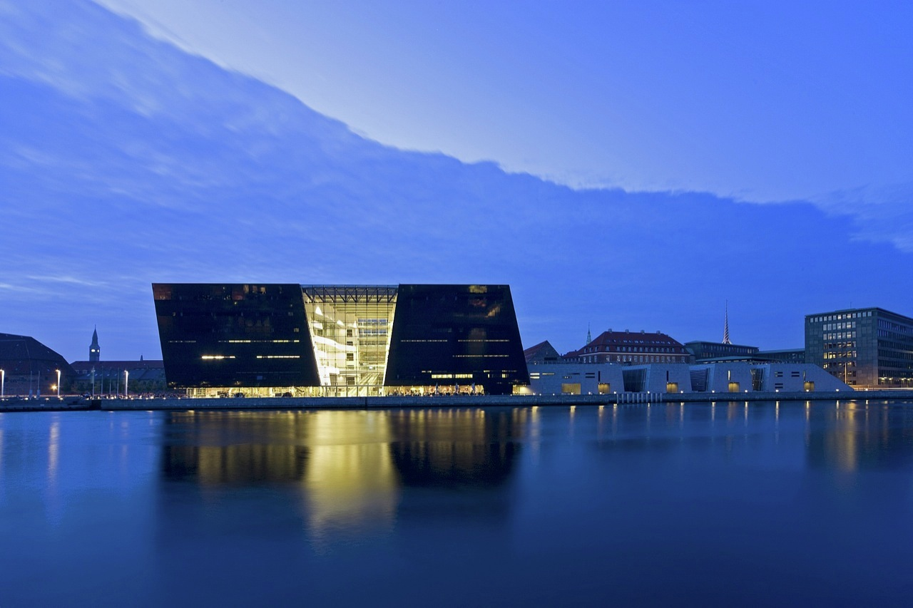
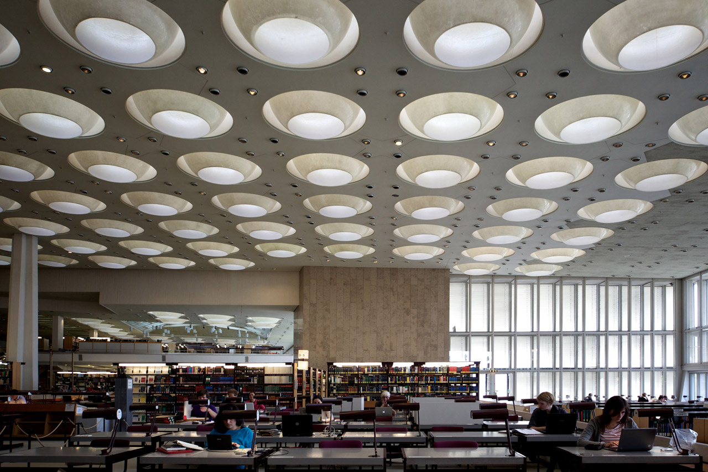
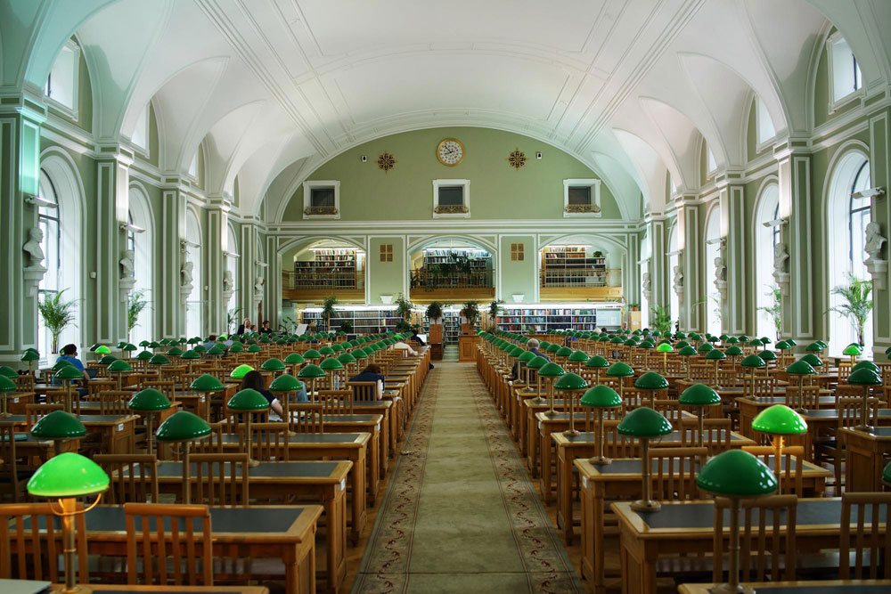

Most Popular Libraries in the World
I don’t know about you, but I’m obsessed with my local library. I mean, if you think about it, the idea of a public library—where anyone in the community is trusted to borrow books, often for long stretches of time, for free, ad infinitum—is fairly magical. Where else do you get something for nothing? Which is not even to mention the many programs, study space, use of computers, and other perks that most public libraries offer. Basically, what I’m saying is: libraries should be even more popular than they are—but some of them are pretty popular already.
New York Public Library, New York, NY, USA: 18 million visitors per year
In their annual report, the New York Public Library reported that they had hosted 18 million visitors and circulated 23 million items over their 92 locations in 2016. (92! That is impressive enough on its own.) Recent individual building or branch numbers were slightly more difficult to come by, but according to a NYPL press release, in 2012, the Stephen A. Schwarzman Building (what you probably think of as the Main Branch) received 2.3 million visitors, and the Mid-Manhattan branch, which is now closed for renovations, received 1.4 million (though a more recent estimate puts it at 1.7 million, so you may want to mentally adjust both numbers accordingly.)
Brooklyn Public Library, Brooklyn, NY, USA: 8.1 million visitors per year
According to a recent press release, the Brooklyn Public Library received over 8.1 million visitors in 2017, across its 59 branches. The Central Library, the Brooklyn library system’s main branch, sees over 1.3 million visits per year. Probably only a couple hundred of those visits are me.
 National Library of China, Beijing, China: 5.6 million visitors per year
National Library of China, Beijing, China: 5.6 million visitors per year
Established as the Imperial Library of Peking in 1909, the National Library of China is now the largest library in Asia, with holdings of over 35 million items. The library’s annual report puts their total visitors (across multiple locations) at 5.6 million (5,639,900, to be precise) in 2016.
State Library of Victoria, Melbourne, Australia: 2 million visitors per year
According to its annual report, in the 2016-2017 fiscal year the State Library of Victoria saw 2,071,250 visitors, breaking the 2 million visit mark for the first time in its history and making it the busiest library in Australia. They also recorded 4,241,307 online visits, 40,993 reference queries, 29,932 new member registrations, 174,224 collection items accessed, and 1,464,965 uses of digitized collection items. Not too shabby.
Library of Congress, Washington D.C., USA: 1.9 million visitors per year
The Library of Congress is not only the oldest federal cultural institution in the United States (it was founded in 1800), but is also the largest library in the country and is among the largest in the world, if not the largest. According to its website, the library hosted “nearly 1.9 million onsite visitors” in 2017—to peruse its 167,000,738 items on about 838 miles of bookshelves.
British Library, London, UK: 1.5 million visitors per year
The British Library rivals the Library of Congress in terms of the size of their holdings, with over 150 million items, many of them unique. According to their annual report, the British Library welcomed “almost 1.5 million” visitors in the 2016-2017 fiscal year, this figure representing “a small but disappointing reduction in our overall visitor numbers.” (In response they will be “making improvements to [their] Treasures Gallery,” which seems like it will work.)
 Royal Danish Library, Copenhagen, Denmark: 1.44 million visitors per year
Okay, this one’s a little wonky, because the most recent official information I could find is from 2014, when 1.44 million people visited the Royal Library in Copenhagen. But in January of 2017, Denmark’s State and University Library and the Royal Library merged into the Royal Danish Library—a move I can only imagine has upped the visitor level, when taken as a whole. Still, as ever, I’m working with what I’ve got here.
 Berlin State Library, Berlin, Germany: 1.4 million visitors per year
According to this website and Wikipedia, 1.4 million people visited the Berlin State Library (Staatsbibliothek zu Berlin) in 2009. I can’t confirm this, because I don’t read German, but I did find what appears to be a more recently updated stats page for the library—also in German, of course. If you can read it, update me.
Russian State Library, Moscow, Russia: 1.17 million visitors per year
I ran into another translation issue here, because the intel on Moscow’s Russian State Library is—shockingly—in Russian. But according to this website, the Russian State Library maintains about 44.4 million items and fields 1.17 million annual visitors.
 Bibliothèque nationale de France, Paris, France: 1.15 million visitors per year
Bibliothèque nationale de France, Paris, France: 1.15 million visitors per year
The national library of France, which boasts a collection of 15 million books and other items, reported 1,150,000 visits across its four Parisian branches in 2016. It’s also a pretty common (and gorgeous) tourist destination.
 National Library of Russia, St. Petersburg, Russia: 1 million visitors per year
According to their website, in 2011, 966,000 people (I am rounding up) visited the reading rooms of the National Library of Russia, which has a collection of 35,718,000 items—though unlike some others on that list, that number was on a downward trajectory. It’s not clear what has happened in the last few years, but even if there are only (only!) a million visitors per annum, it’s worth mentioning here.
 Trinity College Library, Dublin, Ireland: 1 million visitors per year
Trinity College Library, Dublin, Ireland: 1 million visitors per year
According to their annual report, the Trinity College Library—the largest library in Ireland—welcomed over 964,000 visitors in 2017, which again, I am rounding up to a million. Many of those came to see the Book of Kells—a gorgeous 9th century illuminated manuscript that is among Ireland’s greatest sights—and the famous Long Room, which also ranks pretty highly as far as sights go, in my opinion.